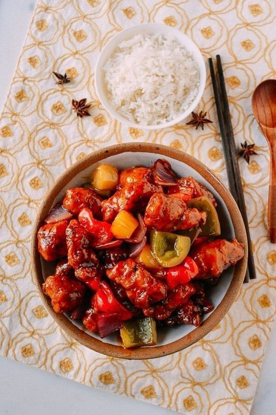

Famous Foods of Nagaland
Smoked Pork with Bamboo Shoot

Smoked Pork with Bamboo Shoot Recipe:
- Ingredients:
- 500g smoked pork
- 100g bamboo shoots
- 2 medium-sized tomatoes, chopped
- 2 green chilies, slit
- 1 tsp ginger-garlic paste
- Salt to taste
- Instructions:
- Cut the smoked pork into bite-sized pieces.
- Boil the pork in water for about 20 minutes to reduce the fat content.
- Drain the water and set the pork aside.
- In a pan, add the pork, bamboo shoots, tomatoes, green chilies, and ginger-garlic paste.
- Cook on medium heat, adding water as needed, until the pork becomes tender.
- Adjust the salt and cook until the bamboo shoots are soft.
- Serve hot with steamed rice.
Galho (Naga Porridge)
Galho Recipe:
- Ingredients:
- 1 cup rice
- 100g smoked meat (optional)
- 1 cup mixed vegetables (potatoes, beans, etc.)
- 1 tsp ginger, minced
- 2 garlic cloves, minced
- Salt to taste
- Instructions:
- Wash the rice and soak it for 10 minutes.
- In a pot, add rice, smoked meat, and enough water to cook the rice.
- Add minced ginger, garlic, and salt to taste.
- Bring it to a boil, then reduce heat and let it simmer.
- Add mixed vegetables and cook until the rice is soft and porridge-like.
- Serve hot, garnished with fresh herbs if desired.
Axone (Fermented Soybean) with Pork

Axone with Pork Recipe:
- Ingredients:
- 500g pork, cut into pieces
- 3 tbsp Axone (fermented soybean)
- 2-3 dried red chilies
- 1 tsp ginger-garlic paste
- Salt to taste
- Instructions:
- In a pot, add the pork pieces and enough water to cover them.
- Bring to a boil and cook until the pork is tender.
- Drain the water and set aside the pork.
- In a pan, dry roast the dried red chilies and Axone.
- Grind the roasted chilies and Axone to make a coarse paste.
- Add the paste to the pork, along with ginger-garlic paste, and cook for about 10 minutes.
- Add salt to taste and cook until everything is well combined.
- Serve hot with rice.